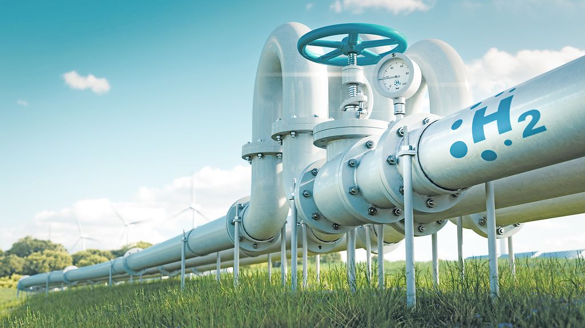
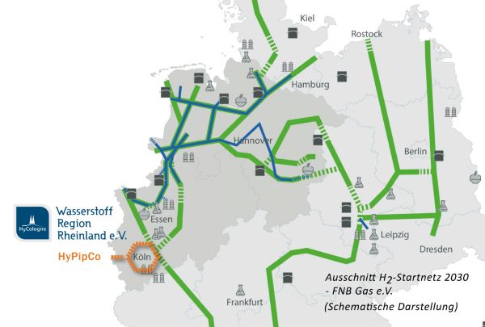

Tiago, Quirin

• Geringe Energiedichte: Wasserstoff muss für den effizienten Transport verdichtet oder verflüssigt werden.
• Sehr kleine Moleküle: Dadurch sind besonders hohe Anforderungen an die Dichtheit von Leitungen und Behältern erforderlich.
• Verflüssigung bei ca. −253 °C: Die extrem niedrige Temperatur erfordert einen hohen Kühlaufwand.
• Gefahr der Wasserstoffversprödung: Spezielle Materialien sind notwendig, um Schäden an Leitungen und Speichern zu vermeiden.
• Hoher Energiebedarf für Transport und Speicherung: Dies führt zu höheren Kosten entlang der gesamten Wasserstoff-Wertschöpfungskette.

• Technisch erprobt: Pipelines eignen sich für den Transport großer Wasserstoffmengen.
• Günstiger Transport: Im Vergleich zu Lkw oder Schiffen sind Pipelines langfristig kosteneffizienter.
• Hohe Transportkapazität: Sie ermöglichen eine zuverlässige Versorgung mit großen Mengen Wasserstoff.
• Hohe Bau- und Investitionskosten: Der Aufbau einer Wasserstoff-Pipeline erfordert erhebliche finanzielle Mittel.
• Lange Planungs- und Genehmigungsverfahren: Der Bau neuer Leitungen nimmt oft mehrere Jahre in Anspruch.
• Wirtschaftlichkeit: Der Betrieb lohnt sich nur bei einer ausreichend hohen und langfristigen Nachfrage.
• Ausbau des Wasserstoff-Kernnetzes: In Deutschland ist der Aufbau eines rund 9.040 km langen Wasserstoff-Kernnetzes geplant.
• Nutzung bestehender Erdgasleitungen: Vorhandene Erdgasleitungen werden für den Transport von Wasserstoff umgerüstet und weiterverwendet.
• Hohe H₂-Kompatibilität: Etwa 96 % der bestehenden Erdgasleitungen sind bereits H₂-ready und für eine Umrüstung geeignet.
• Transport über weite Strecken: Große Wasserstoffmengen können effizient über lange Distanzen und Landesgrenzen hinweg transportiert werden.
• Sehr hohe Transportkapazität: Große Pipelines können 8–10-mal mehr Energie transportieren als andere Transportwege.
• Hohe Leistung nach Umrüstung: Umgerüstete Erdgasleitungen erreichen etwa 80–90 % ihrer ursprünglichen Transportkapazität.
• Schwer elektrifizierbare Bereiche: Wasserstoff spielt eine wichtige Rolle in der Stahl-, Chemie- und Zementindustrie.
• Dekarbonisierung: Er ermöglicht die Reduzierung der letzten 10–20 % der CO₂-Emissionen, die sich nur schwer vermeiden lassen.
• Beitrag zur Energieversorgung: Langfristig könnte Wasserstoff etwa 10–20 % des gesamten Energiebedarfs decken.
• Effizienter Transport: Ohne Pipelines wäre der Transport von Wasserstoff deutlich teurer und wirtschaftlich weniger attraktiv.
Wasserstoff-Pipelines sind kein alleiniger Weg zur Klimaneutralität, aber ein wichtiger Baustein. Sie ermöglichen den Transport großer Mengen Wasserstoff und damit die Dekarbonisierung schwer elektrifizierbarer Industrien. Besonders langfristig tragen sie dazu bei, Emissionen zu senken und die Energieversorgung zu sichern, sind jedoch nur in Kombination mit erneuerbaren Energien wirklich wirksam.